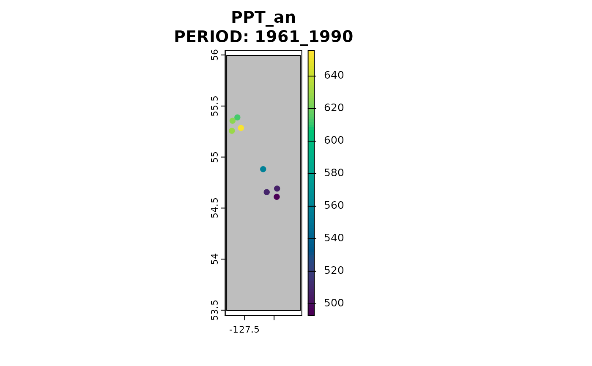

Change-factor downscaling of observed and simulated climate data
downscale.Rddownscale() is the engine for climr_downscale().
It takes user-supplied high- and low-resolution rasters as input and downscales to user-specified point locations.
While less user-friendly than climr_downscale(), downscale() is more flexible in that users can supply their own raster inputs. For example, a user could supply their own high-resolution climate map, instead of what is available in climr, as the input to normal.
Arguments
- xyz
a
data.framewith the following columns "long", "lat", "elev", and a unique "id". Any extra columns will be ignored and not output.- normal
SpatRaster. Outputs fromnormal_input(). The high-resolution climate maps for use as the downscaling baseline.- gcm
listofSpatRasters. Outputs fromgcm_input(). Global climate model data for 20-year normal periods to be downscaled. Default toNULL.- historic
listofSpatRasters. Outputs fromhistoric_input(). Observed climate data for 20-year normal periods to be downscaled. Default toNULL.- gcm_ts
listofSpatRasters. Outputs fromgcm_ts_input(). Global climate model time series for ssp-rcp scenarios to be downscaled. Default toNULL.- gcm_hist
listofSpatRasters. Outputs fromgcm_hist_input(). Global climate model time series for historical scenario to be downscaled. Default toNULL.- historic_ts
listofSpatRasters. Outputs fromhistoric_input_ts(). Observed climate time series to be downscaled. Default toNULL.- return_normal
logical. Return downscaled climate values for the reference normal period (1961-1990)? Default
TRUE.- vars
character. A vector of climate variables to compute. Options are
list_variables(). Definitions can be found by callingView(variables)and queried by loading the 'variables' object into the R environment withdata(variables). Defaults to monthly PPT, Tmax, Tmin.- ppt_lr
logical. Apply elevation adjustment to precipitation. Default to FALSE.
- nthread
integer. Number of parallel threads to use to do computations. Default to 1L.
- out_spatial
logical. Should a SpatVector be returned instead of a
data.frame.- plot
character. If
out_spatialis TRUE, the name of a variable to plot. If the variable exists innormal, then its normal values will also be plotted. Otherwise, normal January total precipitation (PPT01) values will be plotted. Defaults to no plotting (NULL).
Value
A data.table or SpatVector with downscaled climate variables. If gcm is NULL,
this is just the downscaled normal at point locations. If gcm is provided,
this returns a downscaled dataset for each point location, general circulation
model (GCM), shared socioeconomic pathway (SSP), run and period.
Details
We recommend climr_downscale() for most purposes.
Examples
dbCon <- data_connect()
on.exit(try(pool::poolClose(dbCon)))
xyz <- data.frame(lon = runif(10, -140, -106), lat = runif(10, 37, 61), elev = runif(10), id = 1:10)
## get bounding box based on input points
thebb <- get_bb(xyz)
normal <- normal_input(dbCon = dbCon, bbox = thebb, cache = TRUE)
#> Downloading new data...
#> Error in poolCheckout(pool): The pool has been closed.
## pick one GCM, one SSP and one period from the list of available options
gcm <- gcm_input(dbCon, thebb, gcm = list_gcm()[3], list_ssp()[1], list_gcm_period()[2])
#> Error in poolCheckout(pool): The pool has been closed.
## notice coarseness of the data
terra::plot(gcm[[1]])
#> Error in h(simpleError(msg, call)): error in evaluating the argument 'x' in selecting a method for function 'plot': object 'gcm' not found
downscale(xyz, normal, gcm)
#> Error in eval(expr, envir, enclos): object 'normal' not found
historic <- historic_input(dbCon, thebb)
#> Retrieving from cache...
terra::plot(historic[[1]])

downscale(xyz, normal, gcm = NULL, historic = historic, ppt_lr = FALSE)
#> Error in eval(expr, envir, enclos): object 'normal' not found